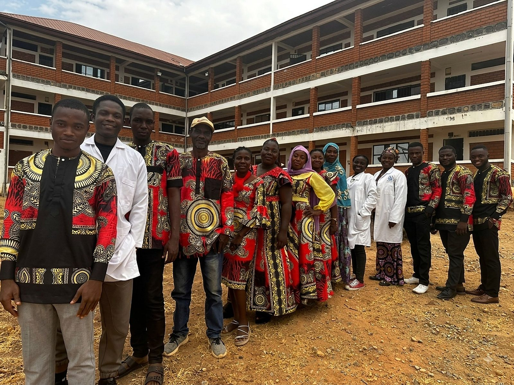

Where We Began
Founded on a Belief in What Cameroon's Youth Can Become
Silverspring College Beka opened its doors in 2022 in Beka Matali, Ngaoundéré I, Vina Division, Adamawa Region, established by the Enow Njock Foundation as a secondary institution dedicated to disciplined, purpose-driven education.
From our earliest days, we set out to be more than a school: a place where every learner is treated as an achiever, equipped academically and morally to become a changemaker, first in their own community, then in Cameroon, and ultimately in the wider world.
Today, SCB is home to over 150 students across four distinct study tracks, all working toward nationally recognized certifications while building the character to carry them beyond the classroom.

Our Location
Beka Matali, Ngaoundéré I, Vina Division, Adamawa Region, Cameroon.
Our Founder
Proudly established and supported by the Enow Njock Foundation.
Our Vision
To be a highly competitive secondary institution, rooted in discipline, that equips every learner with the tools to lead confidently in their community and the world.
Our Mission
To instill strong nation-building values in young Cameroonians, raising a generation of disciplined patriots and capable leaders through quality, values-based education.
Our Core Values
Discipline, integrity, excellence, and service: the four pillars every SCB learner is grounded in, both inside and outside the classroom.
Proud to Be an Enow Njock Foundation Institution
Silverspring College Beka is one of the schools established by the Enow Njock Foundation (ENF), an organization committed to expanding access to quality education across Cameroon. Being part of the ENF family connects our students and staff to a wider mission of education-driven community transformation.